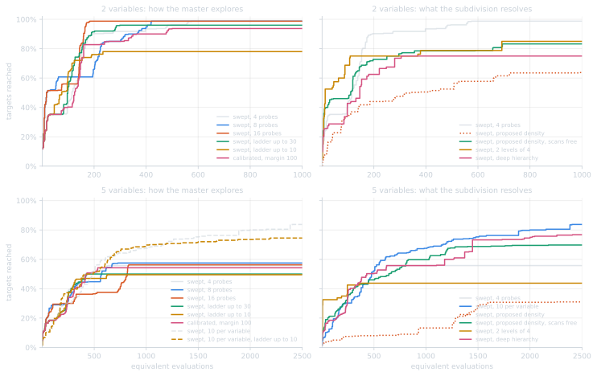
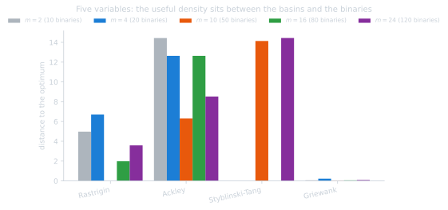
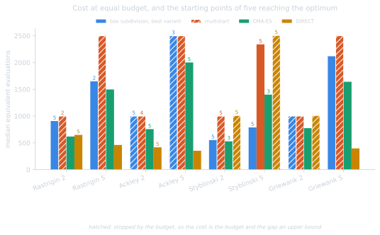
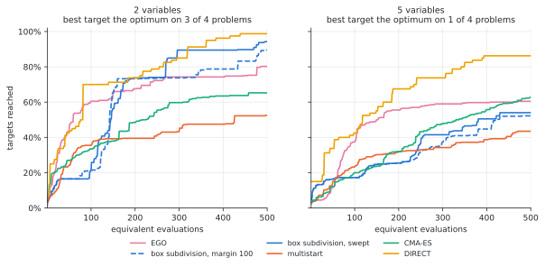
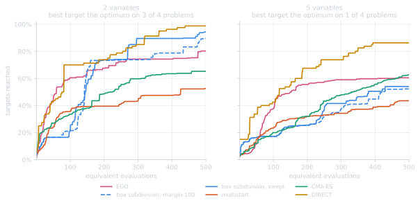
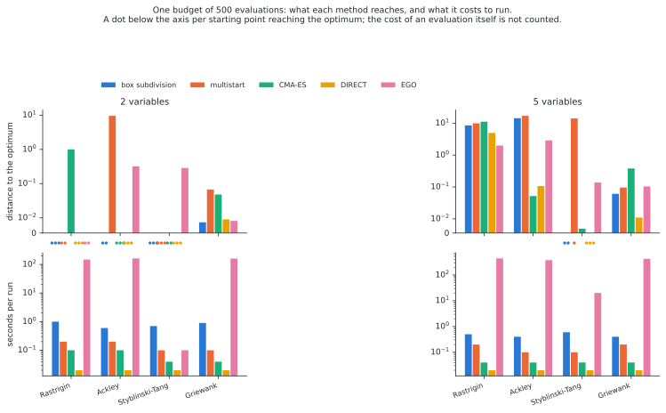

Results#
What the method achieves: against the exhaustive enumeration of the boxes, across its own variants, and, in the best of them, against the baselines of the problem class. The problems are described in one appendix and the baselines in the other; how the settings were arrived at is annex C.
Reproduce with tox -e benchmark.
Important
Every selection on this page holds within its budget, and not beyond it. The runs are given a fixed number of equivalent evaluations, and a cell whose cost equals that budget was stopped by the budget rather than by its own criterion: its distance to the optimum is an upper bound on what the same configuration would reach with more evaluations, not a result. Ranking two such cells says which got further within the budget, which is a weaker statement than which solves the problem. Cells reporting a cost below the budget did end on their own, and those comparisons are between finished runs.
Where a conclusion here rests on a truncated run it is marked. The honest summary is that if the goal were to solve a problem from every starting point whatever the cost, the first thing to spend is budget, and the choices compared here would have to be re-ranked at that larger budget.
Against the enumeration of the boxes#
The reference is the enumeration: solving the sub-problem of every box. It
is exhaustive, embarrassingly parallel and needs no cuts, so the outer
approximation is only worth its complexity if it reaches the same optimum after
substantially fewer sub-problems. Both drive the same main problem through the
same Benders formulation, so the comparison isolates the exploration strategy.
Rastrigin in two dimensions, \(10 \times 10 = 100\) boxes, eight starting points, counted in executions of the objective discipline:
formulation |
method |
objective |
boxes solved |
executions |
|---|---|---|---|---|
constraint |
enumeration |
\(0.0\) |
100 |
1427 |
constraint |
outer approximation |
\(0.0\) |
24 to 36 |
341 to 521 |
normalized |
enumeration |
\(0.0\) |
100 |
1267 |
normalized |
outer approximation |
\(0.0\) |
20 to 36 |
255 to 458 |
About three times cheaper for the same optimum, solving a quarter to a third of the boxes. Both formulations reach the optimum from seven starting points out of eight, so reliability no longer separates them; what does is cost. The normalized formulation enumerates for about 11% less, its sub-problems being bounded by their box instead of having to restore the feasibility of a box constraint, and its cheapest outer-approximation runs are cheaper still, \(255\) executions against \(341\). It is therefore the one to prefer, by a small margin.
The variants of the method, profiled#
The method explores through two mechanisms of its master, and resolves the landscape through one more of its subdivision:
the probes, the boxes the master proposes per iteration, which in a swept run are also the rungs of the convexity ladder, so that more of them try more boxes and more convexity values at once;
the top of the ladder, a low one keeping the master near the boxes its cuts favour and a high one sending it across the design space;
the density, fixed, proposed by counting basins, or reached through the multi-resolution encoding or the deep hierarchy, which buy a resolution the flat subdivision cannot afford in binaries.
Each variant below changes one of those from the swept configuration, the
one a user gets having tuned nothing: SweptBoxSubdivisionSettings(), four
probes, a ladder bounded by the spread of the objective, and the default
density, ten subdivisions per variable in two dimensions and two in five. The
calibrated configuration, the convexity margin set to \(100\), is there as the
reference the sweep replaced.
They are compared by data profiles. Each problem is given a ladder of twenty
target values, from one any method reaches early down to the global optimum, and
the profile of a configuration is the fraction of all the targets, over the four
problems and five starting points, it has reached after a given number of
evaluations. The targets and the profiles are computed by
gemseo-benchmark: its
TargetsGenerator from the pooled histories of every run of a dimension, the
variants and the baselines alike, so that a curve here and a curve in
the comparison against the baselines mean the same
thing, and its DataProfile from the history of each run. The budget is \(500\)
equivalent evaluations per variable, a gradient counting as one. The area is
the mean fraction of the targets reached over the whole budget, which rewards
reaching them early as well as reaching many; it is what the variants are ranked
by.


variant |
2 variables: area |
at 250 |
at 1000 |
5 variables: area |
at 625 |
at 2500 |
|---|---|---|---|---|---|---|
swept, 4 probes |
\(0.87\) |
90% |
99% |
\(0.51\) |
56% |
56% |
calibrated, margin 100 |
\(0.83\) |
85% |
94% |
\(0.50\) |
54% |
54% |
swept, 8 probes |
\(0.88\) |
85% |
99% |
\(0.52\) |
55% |
57% |
swept, 16 probes |
\(0.92\) |
99% |
99% |
\(0.49\) |
38% |
56% |
swept, ladder up to 30 |
\(0.88\) |
92% |
96% |
\(0.47\) |
50% |
50% |
swept, ladder up to 10 |
\(0.73\) |
78% |
78% |
\(0.46\) |
49% |
50% |
swept, 10 per variable |
— |
— |
— |
\(0.64\) |
62% |
84% |
swept, 10 per variable, ladder up to 10 |
— |
— |
— |
\(0.63\) |
59% |
74% |
swept, proposed density |
\(0.51\) |
44% |
64% |
\(0.19\) |
8% |
31% |
swept, proposed density, scans free |
\(0.75\) |
75% |
83% |
\(0.58\) |
49% |
70% |
swept, 2 levels of 4 |
\(0.77\) |
75% |
85% |
\(0.43\) |
44% |
44% |
swept, deep hierarchy |
\(0.67\) |
68% |
75% |
\(0.60\) |
56% |
77% |
In two variables ten per variable is the default, so the rows at that density would repeat the ones above them.
More probes explore better, where the subdivision resolves the basins. In two variables sixteen probes reach \(99\%\) of the targets by \(250\) evaluations, against \(90\%\) for four, and solve Rastrigin, Ackley and Styblinski-Tang from every starting point: the best configuration of the method on this page, and ahead of every baseline. Eight sit between the two. In five variables at two subdivisions per variable more probes buy nothing, \(0.49\) to \(0.52\) whatever the count: a probe chooses among boxes, and with two per variable no box separates the basins of Rastrigin or Ackley. The counts measured here, four, eight and sixteen, avoid the hole annex D found at six.
More probes also cost master time, which the budget does not count. Sixteen probes at ten subdivisions per variable in five dimensions, fifty binaries, is left out of the table: half its runs had not spent their \(2500\) evaluations after five hours of wall time, every probe being a mixed-integer solve, and the half that had were worse than four probes, reaching Rastrigin and Ackley from one starting point of five each against two and three. On an objective costing minutes an evaluation dwarfs a master solve; on these it does not.
A lower ceiling converges faster and stops sooner. A ladder topped at \(10\) is the fastest start in two variables, \(63\%\) of the targets at \(100\) evaluations against \(43\%\), and ends at \(78\%\), having missed Ackley from every starting point. At ten per variable in five it does the same, \(37\%\) against \(30\%\) at \(250\) evaluations, ending at \(74\%\) against \(84\%\). Topped at \(30\) it costs less: a faster start in two variables, \(92\%\) at \(250\) against \(90\%\), and \(96\%\) at the end against \(99\%\). The low rungs propose the box next door, so a ladder short of them converges on the region it started in, which is a trade of reliability for speed rather than a free acceleration.
Calibrating the convexity buys nothing. The margin of \(100\) is below the sweep in both dimensions, \(0.83\) against \(0.87\) and \(0.50\) against \(0.51\), and reaches Ackley in two variables from three starting points of five against five.
In five variables the density decides, as below. Ten subdivisions per variable is the best variant there, \(0.64\), and its final \(84\%\) is the highest of any configuration at this budget, the baselines included. It reaches Styblinski-Tang from five starting points of five, Ackley from three and Rastrigin from two; the calibrated density sweep below reached Rastrigin from all three of its own starting points, a difference that three and five starting points cannot settle. The deep hierarchy comes next at \(0.60\), and solves Ackley from four starting points of five, the one problem it was built for.
The proposed density does not pay for its scans. Counting the basins costs from \(500\) evaluations on Styblinski-Tang to over ten thousand on Ackley in two variables, and from \(1250\) to about twenty-five thousand in five, more than the budget on most problems, so a run paying for its scans is the last row in both dimensions. Given the scans for free, it still ranks below the fixed densities, \(0.75\) against \(0.87\) in two variables and \(0.58\) against \(0.64\) in five, Ackley’s unresolved ladder proposing over sixty subdivisions per variable. See what the proposal costs.
The multi-resolution encoding starts fastest and stops soonest. Two levels of four are the fastest variant over the first evaluations in both dimensions, \(69\%\) of the targets at \(100\) in two variables and \(42\%\) at \(250\) in five, and the flattest afterwards, ending at \(85\%\) and \(44\%\). Swept, it misses Styblinski-Tang in five variables from every starting point, where the calibrated encoding of annex D reached it from one of three.
The density of the subdivision decides#
The number of boxes is the Cartesian product of the subdivisions, so it explodes with the dimension, but the master does not see it: it sees the one-hot binaries, \(\sum_j m_j\), which grow linearly. Five variables with ten subdivisions each is \(100\,000\) boxes and only \(50\) binaries.
Five variables, the adaptive configuration, a budget of \(2500\), three starting
points. The median distance to the optimum, the median cost, and the number of
starting points reaching it:
\(m\) |
binaries |
boxes |
Rastrigin |
Ackley |
Styblinski-Tang |
Griewank |
|---|---|---|---|---|---|---|
2 |
10 |
\(32\) |
\(4.98\) · 823 |
\(14.43\) · 892 |
\(0.00\) · 458 · 2/3 |
\(0.06\) · 1016 |
4 |
20 |
\(10^3\) |
\(6.70\) · 714 |
\(12.63\) · 1277 |
\(0.00\) · 846 · 3/3 |
\(0.22\) · 1547 |
10 |
50 |
\(10^5\) |
\(0.00\) · 2103 · 3/3 |
\(6.30\) · 2500† |
\(14.14\) · 598 · 1/3 |
\(0.03\) · 2500† |
16 |
80 |
\(10^6\) |
\(1.99\) · 1706 |
\(12.63\) · 2500† |
\(0.00\) · 973 · 2/3 |
\(0.05\) · 2500† |
24 |
120 |
\(8 \cdot 10^6\) |
\(3.59\) · 1628 |
\(8.53\) · 2500† |
\(14.44\) · 1098 · 1/3 |
\(0.08\) · 2500† |
† stopped by the budget, so the gap is an upper bound rather than a result.


Rastrigin in five dimensions is solved, from every starting point, for about \(2100\) evaluations, which no baseline achieves at any budget tried here. That is the headline of the whole benchmark, and it needs ten subdivisions per variable: at two or four the problem is not solved at all.
The Rastrigin and Styblinski-Tang columns are between finished runs, every cell ending below the budget, so what follows about them is a comparison of results. The Ackley and Griewank columns are not: from ten subdivisions upwards every run is stopped by the budget, so those two columns rank how far each density got in \(2500\) evaluations and say nothing about which density would win with more. Ackley’s apparent improvement with refinement is that kind of statement and no stronger.
There is a ceiling, and it is the binaries. Past ten subdivisions the quality falls away on Rastrigin, \(1.99\) at sixteen and \(3.59\) at twenty-four, while the cost falls too, which is the signature of a run ending early rather than searching harder. The cut model carries \(\sum_j m_j\) coefficients and a budget buys a few dozen cuts to identify them, so a subdivision is usable while its binaries stay below the sub-problems a budget can pay for. Fifty against about fifty is the edge; eighty is past it. This is the rule the number of boxes never gave: \(10^5\) boxes are fine and \(10^6\) are not, for a reason that has nothing to do with either figure.
There is also a floor, and it is the basins. The subdivision has to separate the minima, which is why Rastrigin needs ten: its basins are about one unit apart over a range of ten.
And refining past the basins is not free. Styblinski-Tang has two basins per variable and is solved at two and four subdivisions; at ten it is not, \(14.14\) and one starting point out of three. Ten subdivisions cut each of its basins into five boxes, and a box holding no minimum of its own returns a value and a sensitivity that say nothing about where the minimum is, so the ranking degrades. The same reversal appears under the pure convexification and under three of the four trust-region radii, in annex C, so it belongs to the subdivision and not to the master.
So the useful density sits between the basins and the binaries, and no single
value serves all four problems: ten is best for three of them and worst for
the fourth. The default of benchmarks/baselines.py bounds the enumeration
rather than guessing.
Proposing it rather than sweeping it#
That leaves the density as the one setting a caller has to find by trial, and it need not be. Counting the basins along jittered axial scans of each component proposes one, by the construction the methodology sets out. Each problem below is granted four times the budget its own proposal implies, so every run ends on its own criterion; three starting points, median gap and cost:
problem |
proposed \(m\) |
binaries |
gap |
cost |
reached |
better fixed density |
|---|---|---|---|---|---|---|
Rastrigin |
10 ×5 |
50 |
\(0.00\) |
2103 |
3/3 |
ties 10, beats 2 |
Styblinski-Tang |
2 ×5 |
10 |
\(0.00\) |
458 |
2/3 |
ties 2, beats 10 |
|
10 10 1 1 1 |
23 |
\(0.00\) |
858 |
3/3 |
beats both |
Griewank |
19 13 11 7 9 |
59 |
\(0.064\) |
3463 |
1/3 |
ties 2, loses to 10 |
Ackley |
63 ×5, unresolved |
314 |
\(12.75\) |
5372 |
0/3 |
loses to 10 |
Note
The costs of this table are those of the runs alone. The scans deciding the density evaluate the objective too, and they are not counted here: about \(6100\) evaluations on Rastrigin in five variables, against the \(2103\) of the run they configure, and about twenty-five thousand on Ackley and Griewank. Charged to the budget of the profiles, they leave the proposal the last of the variants in both dimensions. What this table measures is what the proposed density is worth, not what proposing it costs.
On every problem whose ladder resolved, the proposal picks the better of the
two fixed densities, and on one it beats both: partly_multimodal reaches the
optimum from every starting point for \(858\) evaluations against \(1554\) at a flat
ten, by leaving its three unimodal components unsubdivided. The two reversals
this page is built around — ten for Rastrigin, two for Styblinski-Tang — both
come out right without being told, and no fixed value gets both.
The budget the proposal implies is about right. \(\sum_j m_j\) sub-problems
predicts \(2000\) against \(2103\) measured on Rastrigin, \(400\) against \(458\) on
Styblinski-Tang, \(920\) against \(858\) on partly_multimodal: within a third on
each, which is what the coefficients-to-cuts ratio
above implies.
And the row it gets wrong is the row it flags. Ackley’s ladder does not settle, and its proposal of sixty-three is worse than a flat ten. Its ripples are a unit apart over a range of sixty-four, so separating them is correct as a count and useless as a subdivision: what has to be resolved there is the funnel, not the texture on it. The estimate reports itself unresolved in advance, which is the part worth having — it separates the proposals to trust from the one to discard, and it is the same signal that routes such a problem to a hierarchy.
What the estimate reads is the objective. A problem whose basins are cut by non-convex constraints instead returns a single subdivision per component and reports itself settled, the objective there genuinely having one basin; annex D gives the constraint-aware count and the limits it does not pass.
Sweeping the convexity rather than supplying it#
Every number of the density sweep above was obtained with a convexity margin chosen for the problem it was run on, in the units of that problem’s objective. That is the method’s standing criticism, and the answer is to sweep the value rather than supply it: the master’s parallel probes carry a ladder of convexity values, a probe proposing a box already solved climbs a rung, and the bound of the ladder is read off the spread of the objective over the boxes already solved.
Rastrigin and Ackley in two dimensions, whose objectives differ by a factor of four in scale, ten subdivisions, a budget of \(1000\), six starting points. The median gap, the median cost and the starting points from which the optimum is reached:
convexity |
Rastrigin, spans \(\approx 80\) |
Ackley, spans \(\approx 22\) |
|---|---|---|
fixed, margin \(10\) |
\(0.000\) · 226 · 4/6 |
\(10.415\) · 208 · 1/6 |
fixed, margin \(100\) |
\(0.000\) · 543 · 6/6 |
\(0.000\) · 428 · 4/6 |
sweep, \(\kappa_{\max} = 100\) |
\(0.000\) · 491 · 6/6 |
\(0.000\) · 517 · 6/6 |
sweep, no bound at all |
\(0.000\) · 489 · 6/6 |
\(0.000\) · 601 · 6/6 |
No fixed margin is good on both problems, and the sweep is. The margin the tuning settled on, \(100\), is the best fixed row and still reaches Ackley from four starting points out of six; the sweep reaches both problems from all six, and the last row is given no convexity value whatever.
Its bound is forgiving where a margin is brittle. A bound ten times too large costs \(532\) evaluations against \(491\) on Rastrigin and changes nothing that is reached there, because the low rungs stay on the ladder either way; a margin ten times too small reaches one starting point out of six. The bound is not free — the same over-estimate does cost two starting points on Ackley — it is merely forgiving.
It is not free, and it is not measured widely. Escalation costs mixed-integer solves rather than evaluations, which is why the swept rows cost what the calibrated one costs. The table above is two problems in two dimensions, which establish no factor: the decade of headroom the unbounded form needs was chosen on them. What reaches further is the profiles of the variants, where the swept configuration is measured against the calibrated one on four problems in two dimensions and five, from five starting points each — and even there, one mechanism only, the adaptive repair, the pure convexification having never been swept. The full table, the reading of the bound off the objective, and what the headroom is for are in annex C.
The extensions, and what they are worth#
Four extensions were built on the method and measured at equal budget, five variables, \(2500\) equivalent evaluations: subdividing some variables only, the multi-resolution encoding, the hierarchies of subdivisions, and the scores that rank a box. None of them becomes a default, and each says where the method’s difficulty lies. The tables are in annex D; the verdicts are:
subdividing some variables only wins where the multimodality is concentrated and loses where it is not, which is the requirement of the method restated. The cheapest configuration that works is not the one matching the multimodality exactly: the binaries govern here as everywhere else;
the multi-resolution encoding is the one construction that changes what a resolution costs in binaries — sixteen subdivisions per variable for forty binaries instead of eighty — and it earns its place on the one problem the density sweep breaks on, Styblinski-Tang. Fewer, wider levels beat more, narrower ones;
the hierarchies answer one specific shape of problem, a basin too broad for any affordable density: the deep shape solves Ackley at five variables, which nothing else here does. The frontier, the only shape able to undo a choice, is the worst of the family, because every node restarts a master and throws its cuts away;
the positional weighting of a subdivision stays the wrong choice, which is the trust-region metric conclusion reappearing in a second setting.
Several of those comparisons are between runs the budget stopped, so annex D re-runs the one where it matters at twice and four times the budget. It corrects one margin — the flat subdivision reaches Ackley from two starting points out of six rather than none, so the hierarchy’s margin is four against two — and shows that past that, more budget buys nothing at all: both configurations stop on their own caps.
Against the baselines#
The method is compared here in its best variant of the profiles above, which is not the same in both dimensions: sixteen probes in two variables, ten subdivisions per variable in five, both swept, so neither carries a convexity value chosen for these problems. The runs are those of the profiles: four problems, five starting points, \(500\) equivalent evaluations per variable under the adjoint convention. Each cell is the median distance to the optimum, the median cost, and the number of starting points from which the optimum was reached:
problem |
\(n\) |
box subdivision, best variant |
multistart |
CMA-ES |
DIRECT |
|---|---|---|---|---|---|
Rastrigin |
2 |
\(0.00\) · 908 · 5/5 |
\(1.00\) · 1000 · 2/5 |
\(2.06\) · 619 · 0/5 |
\(0.00\) · 649 · 5/5 |
Ackley |
2 |
\(0.00\) · 1000 · 5/5 |
\(0.00\) · 1000 · 4/5 |
\(0.00\) · 757 · 5/5 |
\(0.00\) · 417 · 5/5 |
Styblinski-Tang |
2 |
\(0.00\) · 553 · 5/5 |
\(0.00\) · 1000 · 5/5 |
\(0.00\) · 529 · 3/5 |
\(0.00\) · 1011 · 5/5 |
Griewank |
2 |
\(0.007\) · 1000 · 0/5 |
\(0.010\) · 1000 · 0/5 |
\(0.030\) · 775 · 0/5 |
\(0.007\) · 1011 · 0/5 |
Rastrigin |
5 |
\(1.00\) · 1650 · 2/5 |
\(5.97\) · 2500 · 0/5 |
\(8.95\) · 1497 · 0/5 |
\(4.98\) · 461 · 0/5 |
Ackley |
5 |
\(0.00\) · 2500 · 3/5 |
\(8.01\) · 2500 · 0/5 |
\(0.00\) · 2001 · 5/5 |
\(0.11\) · 353 · 0/5 |
Styblinski-Tang |
5 |
\(0.00\) · 789 · 5/5 |
\(0.00\) · 2340 · 5/5 |
\(0.00\) · 1401 · 3/5 |
\(0.00\) · 2505 · 5/5 |
Griewank |
5 |
\(0.027\) · 2118 · 0/5 |
\(0.047\) · 2500 · 0/5 |
\(0.030\) · 1641 · 0/5 |
\(0.011\) · 397 · 0/5 |


The same runs as data profiles, on the targets of the variants. EGO is added at the \(500\) evaluations its surrogate can afford, its curve marked where that budget ends; the next section compares every method at that budget.


\(n\) |
method |
area |
at a tenth |
at a quarter |
at a half |
at the budget |
|---|---|---|---|---|---|---|
2 |
box subdivision, 16 probes |
\(0.92\) |
56% |
99% |
99% |
99% |
2 |
multistart |
\(0.73\) |
46% |
64% |
78% |
92% |
2 |
CMA-ES |
\(0.73\) |
60% |
70% |
78% |
78% |
2 |
DIRECT |
\(0.90\) |
69% |
84% |
99% |
99% |
2 |
EGO, 500 evaluations |
— |
74% |
84% |
86% |
86%‡ |
5 |
box subdivision, 10 per variable |
\(0.64\) |
30% |
62% |
73% |
84% |
5 |
multistart |
\(0.51\) |
37% |
50% |
54% |
60% |
5 |
CMA-ES |
\(0.68\) |
54% |
67% |
76% |
78% |
5 |
DIRECT |
\(0.76\) |
75% |
79% |
79% |
79% |
5 |
EGO, 500 evaluations |
— |
59% |
— |
— |
64%‡ |
‡ at its own budget of \(500\), which in five variables falls before a quarter of the others’; EGO has no area, the mean over a budget it was not given.
In two variables the method is the fastest to the targets. Sixteen probes reach \(99\%\) of them within a quarter of the budget, \(250\) evaluations, where DIRECT, the strongest baseline, is at \(84\%\) and needs twice as many to catch up. It solves Rastrigin, Ackley and Styblinski-Tang from every starting point. It is not the cheapest to finish: its runs keep proposing boxes once the optimum is found, and spend the whole budget on Ackley where DIRECT stops at \(417\). The profile measures how soon a target is reached, the cost column how soon a run stops, and the two rank the methods differently.
In five variables DIRECT leads for most of the budget and the method finishes highest. DIRECT reaches \(75\%\) of the targets within \(250\) evaluations and then stalls at \(79\%\); ten subdivisions per variable is slower, behind both DIRECT and CMA-ES until \(1890\) evaluations, the last quarter of the budget, and ends at \(84\%\). It is the only method here that solves Rastrigin in five variables at all, from two starting points of five, and it solves Styblinski-Tang from every starting point for \(789\) evaluations against \(2340\) for multistart and \(2505\) for DIRECT. It is not the most reliable: on Ackley CMA-ES reaches the optimum from every starting point and the method from three, and on Griewank no method reaches it, DIRECT getting closest at a fraction of the cost.
The best target is the global optimum on every problem in two variables and on three of four in five; on Griewank in five no run reaches the optimum, so its best target is the best value any run found, which compares the methods with each other rather than with the optimum.
Warning
These numbers are measurements, not a claim of generalization. The best variant was selected on these very problems and scored on the same runs, which flatters it: it is the best of up to twelve, each of them measured once. The sweep removes the convexity margin from what a user has to tune, not the probes or the density, and a claim about the method still needs a held-out set of problems and a protocol fixed in advance.
The study takes a few hours, EGO accounting for nearly all of it, and resumes where it stopped when interrupted:
python -m benchmarks.data_profiles # writes docs/_static/data_profiles.json
python docs/figures.py variant_profiles data_profiles results
At a budget every method can afford#
The comparison above gives every method \(500\) equivalent evaluations per variable, which is generous to all of them and representative of nothing industrial. It also excludes Bayesian optimization, whose cost per iteration is cubic in the points gathered so far: one EGO run of \(500\) evaluations takes about two and a half minutes here against three seconds for the box subdivision, and at the budgets above it would measure wall time rather than method quality.
So here is the same set of methods at one budget of \(500\) evaluations, which every one of them can afford, and which is the regime both EGO and this method are built for: an objective costing minutes, where a few hundred evaluations is the whole budget. Four problems, two dimensions each, three starting points, the median distance to the optimum and the number of starting points reaching it.
The method is the swept configuration here, the one a user gets having tuned nothing. The calibrated one reaches the same distance on every row and differs only in what it reaches it from: \(2/3\) rather than \(3/3\) on Ackley in two dimensions and on Styblinski-Tang in five.
problem |
\(n\) |
box subdivision, swept |
multistart |
CMA-ES |
DIRECT |
EGO |
|---|---|---|---|---|---|---|
Rastrigin |
2 |
\(0.00\) · 3/3 · 457 |
\(0.00\) · 2/3 |
\(1.00\) |
\(0.00\) · 3/3 |
\(0.00\) · 2/3 |
Ackley |
2 |
\(0.00\) · 3/3 |
\(9.58\) |
\(0.00\) · 3/3 |
\(0.00\) · 3/3 |
\(0.32\) |
Styblinski-Tang |
2 |
\(0.00\) · 3/3 · 334 |
\(0.00\) · 3/3 |
\(0.00\) · 2/3 |
\(0.00\) · 3/3 |
\(0.29\) · 29‡ |
Griewank |
2 |
\(0.007\) |
\(0.067\) |
\(0.048\) |
\(0.009\) |
\(0.008\) |
Rastrigin |
5 |
\(8.57\) |
\(9.95\) |
\(11.20\) |
\(4.98\) |
\(1.99\) |
Ackley |
5 |
\(14.43\) |
\(17.06\) |
\(0.05\) |
\(0.11\) |
\(2.90\) |
Styblinski-Tang |
5 |
\(0.00\) · 3/3 |
\(14.14\) · 1/3 |
\(0.003\) |
\(0.00\) · 3/3 |
\(0.14\) · 219‡ |
Griewank |
5 |
\(0.061\) |
\(0.096\) |
\(0.381\) |
\(0.011\) |
\(0.104\) |


The lower row is the caveat the upper one cannot show: the distance to the optimum is measured in evaluations, and EGO’s own time per run is two orders of magnitude above every other method’s. On an objective costing minutes that row vanishes; on these it decides.
The figure draws the calibrated configuration where the table above draws the swept one. Its lower row is wall time, which is a property of the machine that measured it as much as of the method, so a series timed elsewhere cannot be set beside the others; the two configurations differ in the upper row only by the two cells the table names.
‡ EGO stopped on its own criterion, after \(29\) and \(219\) evaluations of the \(500\) it was allowed: its expected improvement collapses once the process models the landscape. Every other cell of the table spent its whole budget.
EGO is the best explorer of the hard multimodal cases at this budget, and by a wide margin where it matters most: on Rastrigin in five dimensions it returns \(1.99\) where the next best is DIRECT at \(4.98\) and the box subdivision at \(8.57\). It also gets closest on Griewank in two dimensions. That is the result your intuition should keep: given few evaluations and a landscape of many basins, a surrogate over the whole history beats every method here that throws its history away.
It is also a hundred times more expensive in its own time, \(444\) seconds against \(3\) for the box subdivision on the same cell, and that cost is not counted anywhere in the table. On an objective costing minutes the ratio inverts and the table stands; on these analytic problems it does not.
The box subdivision is the cheapest route to a solved problem where the subdivision resolves the basins, Styblinski-Tang at \(334\) evaluations in two dimensions, ending on its own criterion rather than on the budget. In five it reaches the optimum from every starting point too, but spends the whole five hundred doing so, which is a solve at the wall rather than a cheap one — the calibrated configuration ends at \(458\) and reaches it from two. Where the subdivision does not resolve the basins, five hundred evaluations is simply too few: Rastrigin at five variables needs the \(2103\) of the density sweep above, and no method here solves that problem at this budget.
Note
This table and the one above answer different questions, and neither supersedes the other. This one asks which method gets furthest when evaluations are scarce, which is the industrial case. The one above asks what each method reaches when evaluations are plentiful, which is where the box subdivision’s density can be afforded at all.
What all of this establishes, and where it can go, is the conclusion.